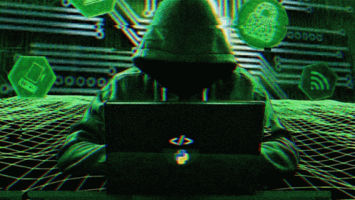

Created by 223204IADB.
Visit TalTech 
A hacker is a person skilled in information technology who uses their technical knowledge to achieve a goal or overcome an obstacle, within a computerized system by non-standard means.
| Name | Activity |
|---|---|
| Kevin Mitnick | He was charged with stealing computer manuals from Pacific Bell. In 1982, he hacked the North American Defense Command (NORAD), an achievement that inspired the 1983 film War Games. In 1989, he hacked Digital Equipment Corporation's (DEC) network and made copies of their software. Because DEC was a leading computer manufacturer at the time, this act put Mitnick on the map. He was later arrested, convicted and sent to prison. During his conditional release, he hacked Pacific Bell's voicemail systems. |
| Anonymous | Anonymous got its start in 2003 on 4chan message boards in an unnamed forum. The group exhibits little organization and is loosely focused on the concept of social justice. For example, in 2008 the group took issue with the Church of Scientology and begin disabling their websites, thus negatively impacting their search rankings in Google and overwhelming its fax machines with all-black images. In March 2008, a group of "Anons" marched passed Scientology centers around the world wearing the now-famous Guy Fawkes mask. As noted by The New Yorker, while the FBI and other law enforcement agencies have tracked down some of the group's more prolific members, the lack of any real hierarchy makes it almost impossible to identify or eliminate Anonymous as a whole. |
| Tim Berners-Lee | Famous not for hacking but inventing the World Wide Web, Berners-Lee nevertheless is undeniably a member of the white-hat hacking camp. As a student at Oxford University, Berners-Lee was banned from using the university computers after he and a friend were caught hacking to gain access to restricted areas. |